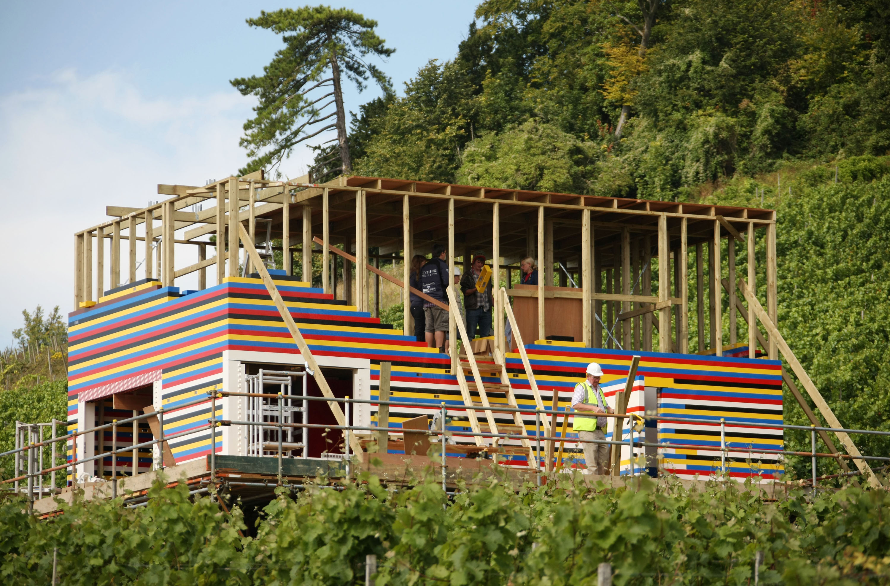

A JavaScript Client Framework
Presented by:
Learn ES2015, Quickly
Aurelia Overview
Testing
Learn ES2015, Quickly!
Also ES2016, sometimes called ES6/7.
JavaScript that doesn't suck :)
var is dead.
Long live let & const
Constants!
var pi = 3.141592653;
// is now
const pi = 3.141592653;
Block scoping!
// this works. stop the insanity.
for (var i=0; i<10; i++) {
console.log(i);
}
console.log(i);
// this does not work :)
for (let i=0; i<10; i++) {
console.log(i);
}
console.log(i);
Arrow Notation
[1,2,3].map(a => a+1);
Lexical this
function() {
var self = this;
self.name = 'Sean';
setInterval(function() {
console.log(self.name); // ugly :(
});
}
function() {
this.name = 'Sean';
setInterval(() => {
console.log(this.name); // => shares the same this
// with the surrounding code!
});
}
Classes
(finally)
class Person {
constructor(firstName, lastName) {
this.firstName = firstName;
this.lastName = lastName;
}
getFullName() {
return this.firstName + ' ' + this.lastName;
}
}
class Developer extends Person {
// static method called with Developer.curse();
static curse() { return 'thou shalt forever be off by one...'; }
constructor(firstName, lastName, isRemote) {
super(firstName, lastName);
this._isRemote = isRemote;
}
// getter, used via developerInstance.isRemote
get isRemote() { return this._isRemote; }
// setter, used via developerInstance.isRemote = false
set isRemote(newIsRemote) {
throw new Error('Cannot re-assign isRemote!');
}
}
Decorators
@isTestable(true)
class Person {
constructor(firstName, lastName) {
this.firstName = firstName;
this.lastName = lastName;
}
@readonly
getFullName() {
return this.firstName + ' ' + this.lastName;
}
}
Decorators are annotations which allow you to define cross-cutting modifications to classes and methods.
Decorators are executed at runtime.
Built-in classes like Array, Date and DOM Elements can be subclassed!
Modules
Making module syntax a native part of the language!
// lib/math.js
export function sum(x, y) {
return x + y;
}
export var pi = 3.141593;
// app.js
import * as math from "lib/math";
alert("2π = " + math.sum(math.pi, math.pi));
// otherApp.js
import {sum, pi} from "lib/math";
alert("2π = " + sum(pi, pi));
Template strings
/* before, in Person, we had this: */
getFullName() {
return this.firstName + ' ' + this.lastName;
}
/* now we can do this!*/
getFullName() {
return `${this.firstName} ${this.lastName}`;
}
for...of (Iterators)
let a = ['a','b','c'];
for (let i in a) {
console.log(i);
}
// prints 0 1 2 (which is pretty useless)
for (let i of a) {
console.log(prop);
}
// prints a b c :)
You can use the Iterator protocol in your own functions and classes to make anything iterable via for...of
Default, Rest and Spread
function f(x, y=12) {
// y is 12 if not passed (or passed as undefined)
return x + y;
}
f(3) == 15
function f(x, ...y) {
// y is an Array
return x * y.length;
}
f(3, "hello", true) == 6
function f(x, y, z) {
return x + y + z;
}
// Pass each elem of array as argument
f(...[1,2,3]) == 6
Destructuring
let a, b, rest;
[a, b] = [1, 2]
{a, b} = {a:1, b:2}
// a === 1, b === 2
[a, b, ...rest] = [1, 2, 3, 4, 5]
// a === 1, b === 2, rest === [3,4,5]
Destructuring
(multiple return values)
function f() {
return [1,2];
}
[a, b] = f();
Sets and Maps
const s = new Set();
s.add("hello").add("goodbye").add("hello");
s.size === 2;
s.has("hello") === true;
const m = new Map();
m.set("hello", 42);
m.set("goodbye", 34);
m.get("goodbye") == 34;
WeakMaps and WeakSets
const obj = {
// ...
}
const wm = new WeakMap();
wm.set(obj, 42); // store some metadata about obj.
- Keys in a
WeakMapmust be objects WeakMaps do not hold a strong reference to their keys.- Great way to store additional metadata on an object without polluting it.
- WeakSets are similar
Native Promises
const p = new Promise((resolve, reject) => {
setTimeout(() => {
Math.random() < 0.5 ? resolve() : reject();
}, 500);
});
p.then(() => {
console.log('Resolved!');
})
.catch(() => {
console.log('Rejected!');
});
Generators
function *getTime() {
while(true) {
yield Date.now();
}
}
const timer = getTime();
console.log(timer.next()); // { value: 1454906307698, done: false }
console.log(timer.next()); // { value: 1454906307710, done: false }
console.log(timer.next()); // { value: 1454906307711, done: false }
You can also use the for...of loop with Generators :)
Generators
two-way communication
const summer = (function *sum() {
let sum = 0;
while(true) {
sum += yield sum;
}
})();
summer.next(); // start summer by making it yield once
// now we can pump values into it, and receive the current sum
console.log(summer.next(1)); // { value: 1, done: false }
console.log(summer.next(2)); // { value: 3, done: false }
console.log(summer.next(3)); // { value: 6, done: false }
Calling next() on a generator makes it pause execution. When the generator is restarted by another call to next(), the argument passed to next() replaces the yield expression.
Now for the crazy part...
Generatorsas a way to avoid callbacks
Let's say we have some asynchronous function
returning a Promise:
function longRunning(done) {
return new Promise((resolve) => {
setTimeout(() => {
resolve(Math.random());
}, 500);
});
}
Normally, we'd use it like this:
longRunning.then((result) => {
console.log(result);
})
But now we can do something like this...
const script = function *() {
let s = yield longRunning();
console.log(s);
}();
With the assistance of this horrifying statement:
script.next().value.then((r) => {
script.next(r);
});
Treating async code like it's synchronous is awesome!
const script = function *() {
let s = yield longRunning(); // so cool!
console.log(s);
}();
So how do we avoid the horror?
ES2016 async...await
const script = function *() {
let s = yield longRunning();
console.log(s);
}();
script.next().value.then((r) => {
script.next(r);
});
becomes...
(async function script() {
let s = await longRunning(); // even cooler!
console.log(s);
})();
// no ugliness!
Or, more realistically...
(async function script() {
try {
let s = await longRunning(); // sequential async
let t = await anotherLongRunning();
console.log(s + t);
} catch (err) {
console.error(err);
}
})();
Notice that good old-fashioned try-catch blocks work again!
Or, for parallel async
(async function script() {
try {
let [s,t] = await Promise.all(
longRunning(),
anotherLongRunning()
);
console.log(s + t);
} catch (err) {
console.error(err);
}
})();
Almost all of this is available in Node.js natively, right now!
If you're not using it...start. My eyes will thank you.
ES2015/ES2016
Further reading
For more information, the Babel docs are a good reference
As is the Mozilla Developer Network JavaScript reference
Stuff I didn't cover:
- Symbols (new basic type, allowing private class members)
- Proxies
- New Math, Number, String and Object APIs
- Binary and Octal literals
- Reflection API
- Tail recursion
Learn ES2015, Quickly
Aurelia Overview
Testing
Aurelia Overview
MVVM
Dependency Injection
Routing
Data Binding
Events
Custom Elements and Attributes
Preparing for Production
Learn ES2015, Quickly
Aurelia Overview
Testing
Unit Testing with Aurelia
Good news, it's easy!
- No boilerplate imposed by framework (cough Angular 1)
- Constructor based dependency injection makes it trivial to provide mock dependencies.
Everything is a class
A simple pattern for testing:
- Import module
- Describe the test
- Instantiate class
- Add a test
- Invoke class methods
- Make assertion
- Add more tests...
import {Foo} from '../src/foo';
describe('Foo', () => {
let foo;
beforeEach(() => {
foo = new Foo();
});
it('Returns something', () => {
let result = foo.doSomething();
expect(result).toEqual('foo');
});
it('Something else', () => {
// ...
});
});
Example: View Model
export class Welcome {
constructor() {
this.firstName = 'John';
this.lastName = 'Doe';
}
get fullName() {
return `${this.firstName}
${this.lastName}`;
}
// other methods ...
}
import {Welcome} from
'../src/welcome.js';
describe('Welcome', () => {
let welcome;
beforeEach(() => {
welcome = new Welcome();
});
it('Returns default full name', () => {
expect(welcome.fullName)
.toEqual('John Doe');
});
it('Returns full name', () => {
welcome.firstName = 'Sara';
welcome.lastName = 'Smith';
expect(welcome.fullName)
.toEqual('Sara Smith');
});
});
We want more examples!
Example: Value Converter
import moment from 'moment';
export class DateFormatValueConverter {
toView(value) {
if (value) {
return moment(value)
.format('MMMM Do YYYY');
} else {
return '';
}
}
}
import {DateFormatValueConverter} from
'../src/date-format.js';
describe('DateFormatValueConverter', () => {
let dateFormat;
beforeEach(() => {
dateFormat =
new DateFormatValueConverter();
});
it('Returns a formatted date', () => {
let value = '2016-04-30';
expect(dateFormat.toView(value))
.toEqual('April 30th 2016');
});
it('Returns empty string when no value', () => {
expect(dateFormat.toView())
.toEqual('');
});
});
What about mocking dependencies?
Example: Mocking Dependencies
import moment from 'moment';
import {inject} from 'aurelia-framework';
import {AppConfig} from './app-config';
@inject(AppConfig)
export class DateFormatValueConverter {
constructor(appConfig) {
this.appConfig = appConfig;
}
toView(value) {
let result = '';
if (value) {
result = moment(value)
// .format('MMMM Do YYYY');
.format(this.appConfig.getDateFormat());
}
return result;
}
}
import {DateFormatValueConverter} from
'../src/date-format';
class AppConfigStub {
getDateFormat() {
return 'MMMM Do YYYY';
}
}
describe('Date Format', () => {
let dateFormat;
let mockAC;
beforeEach(() => {
mockAC = new AppConfigStub();
dateFormat =
new DateFormatValueConverter(mockAC);
});
it('Returns a formatted date', () => {
let value = '2016-04-30';
expect(dateFormat.toView(value))
.toEqual('April 30th 2016');
});
});
Can also use Jasmine's spyOn to track and verify mocked calls.
Unit Test Tooling
- Jasmine to write the tests.
- Karma to run the tests, with plugins:
- karma-babel-preprocessor for transpilation of src and test files.
- karma-jspm for dynamic loading of src and test modules.
- Example Karma configuration for Aurelia.
End to End Testing
Challenges with Selenium
- Tests are brittle due to dependency on DOM and CSS.
- Browser interaction is asynchronous.
- Complexity for SPA's detecting when page is loaded, routing is complete.
Protractor to the rescue!
End to end test framework
- Developed for Angular, but also supports Aurelia with a plugin.
- Makes working with Selenium easier.
- Browser interactions return promises, Jasmine assertions patched to wait for resolve
- Knows when Aurelia page has finished loading.
- Locators to find elements by binding rather than DOM positioning.
Welcome Page
${fullName | upper}
Welcome Page E2E Test
${fullName | upper}
- Describe block
- Navigate to app in beforeEach
- Add a test
- Find elements by binding
- Make assertions
describe('Welcome Page', () => {
beforeEach(() => {
browser.loadAndWaitForAureliaPage(
'http://localhost:9000');
});
it('Displays full name', () => {
element(by.valueBind('firstName'))
.clear().sendKeys('John');
element(by.valueBind('lastName'))
.clear().sendKeys('Smith');
expect(element(by.css('.full-name'))
.getText())
.toEqual('JOHN SMITH');
});
});
Page Objects
From the Protractor Documentation
When writing end-to-end tests, a common pattern is to use Page Objects. Page Objects help you write cleaner tests by encapsulating information about the elements on your application page. A Page Object can be reused across multiple tests, and if the template of your application changes, you only need to update the Page Object.
Page Object Example
export class PageObjectWelcome {
constructor() { }
setFirstName(value) {
return element(by.valueBind('user.firstName'))
.clear().sendKeys(value);
}
setLastName(value) {
return element(by.valueBind('user.lastName'))
.clear().sendKeys(value);
}
register() {
element(by.clickTrigger('register()'))
.click();
}
}
import {PageObjectWelcome} from './welcome.po';
describe('Welcome Page', () => {
let poWelcome;
beforeEach(() => {
poWelcome = new PageObjectWelcome();
});
it('Allows user to register', () => {
poWelcome.setFirstName('Joe');
poWelcome.setLastName('Smith');
poWelcome.register();
...
})
});
- Test is more legible.
- If template changes, only need to change PO, not every test.
Still some work to be done

- No "wait for binding", workaround is
browser.sleep(200) - No repeater binding
- No binding for string interpolation
- Skeleton plugin is limited, I've written additional locators here.
Gotchas
It's new...
- Still in beta → moving target
- Documentation is a work in progress
- Not a lot of Q & A on Stack Overflow
-
JSPM is new and quirky (recommended package manager and module loader)
- JSPM link and associated transitive dependencies are flakey
- Implicitly pulls in all transitive dependencies
- Bundling and optimization still needs work